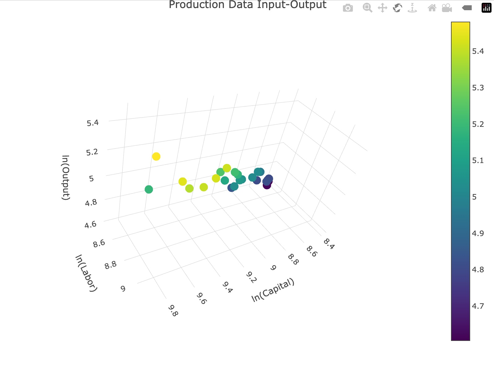

R · Production Economics · OLS Regression
Using the original Douglas (1928) dataset to estimate a log-linearized production function through OLS, quantifying the elasticities of labour and capital, testing returns to scale, and giving advice on firm strategy going forward, Labour vs. Capital.
The Cobb-Douglas production function is one of the most common economic models to understand firm production function, it was first estimated by Charles Cobb and Paul Douglas in 1928 using U.S. manufacturing data. To show my understanding I applied their original dataset to replicate and interpret the estimation using OLS regression in R, recovering the labour and capital elasticities and then interpreting the implications for firm strategy. This study can be used on other firm examples that have the minimum data of production (output Y), Amount of labour (L) and amount/value of capital (K).
The model is log-linearized to allow estimation with ordinary least squares. Taking the natural log of both sides of Q = A · Lβ · Kγ converts a nonlinear relationship into a linear regression, with the slope coefficients directly as output elasticities.
ln(Q) = ln(A) + β · ln(L) + γ · ln(K)
ln(Q) = −4.180 + 0.811 · ln(L) + 0.231 · ln(K)
Since the coefficient on labour (0.811) is greater than the coefficient on capital (0.231), the firm should be labour intensive. This means that a 1% increase in labour raises output by approximately 0.81%, while a 1% increase in capital only raises output by approximately 0.23%. Labour is more than three times as productive at the margin. During this period of US manufacturing, capital was a supporting input, but not the primary driver of output growth.
β + γ = 0.811 + 0.231 = 1.041. The firm has increasing returns to scale, slightly above 1, meaning a 1% increase in both inputs raises output by about 1.04%. This differs and is better than a firm with decreasing returns, which would face a loss in gains from expansion and a natural optimal size. Here the incentive structure favors growth, however that is not always the case.
Here, since the firm has increasing returns to scale, it would benefit from expanding larger, each unit of expansion results in slightly more output gains. In the short run, since capital is typically fixed, the firm should focus on adding labour to capture those gains. In the long run, the firm should scale both labour and capital investments together, focusing more on labour given its stronger effect on output, to sustain and increase returns.
The R² of 0.9572 means labour and capital explain about 95.7% of the variation in output. Both coefficients are highly significant (Labour ***, Capital **), and the overall F-statistic p-value of 4.255e-15 confirms this.
The input-output relationship across all 24 annual observations.

Source: Cobb-Douglas (1928) original dataset. Generated in R using plotly. Author: Andy Setser.
Coefficient estimates from the log-linear OLS specification, ln(Q) ~ ln(L) + ln(K).
| Term | Estimate | Std. Error | t value | Significance |
|---|---|---|---|---|
| Intercept (ln A) | −4.180 | 0.552 | −7.58 | *** |
| ln(L) — β | 0.811 | 0.185 | 4.39 | *** |
| ln(K) — γ | 0.231 | 0.087 | 2.66 | ** |
n = 24 · R² = 0.9572 · Adjusted R² = 0.9531 · F-statistic p-value = 4.255e-15. Significance codes: *** p < 0.001, ** p < 0.01.
Full analysis in R, from raw data import through log transformation, OLS estimation, and 3D visualization.
library(plotly)
cobb_douglas_data <- read.csv("~/Downloads/Cobb Douglas Data.csv")
View(cobb_douglas_data)
colnames(cobb_douglas_data)
cobb_douglas_data$lnL <- log(cobb_douglas_data$Labor) cobb_douglas_data$lnK <- log(cobb_douglas_data$Kapital) cobb_douglas_data$lnQ <- log(cobb_douglas_data$Q) cobb_model <- lm(lnQ ~ lnL + lnK, data = cobb_douglas_data) summary(cobb_model)
plot_ly(cobb_douglas_data, x = ~lnK, y = ~lnL, z = ~lnQ, type = "scatter3d", mode = "markers", marker = list(color = ~lnQ, colorscale = "Viridis", showscale = TRUE)) |> layout(title = "Production Data Input-Output", scene = list(xaxis = list(title = "ln(Capital)"), yaxis = list(title = "ln(Labor)"), zaxis = list(title = "ln(Output)")))
Cobb, C. W., & Douglas, P. H. (1928). A theory of production. The American Economic Review, 18(1), 139–165. Original dataset reproduced in Paul H. Douglas, The Theory of Wages (Macmillan, 1934). Data accessed via course materials, Adams State University.